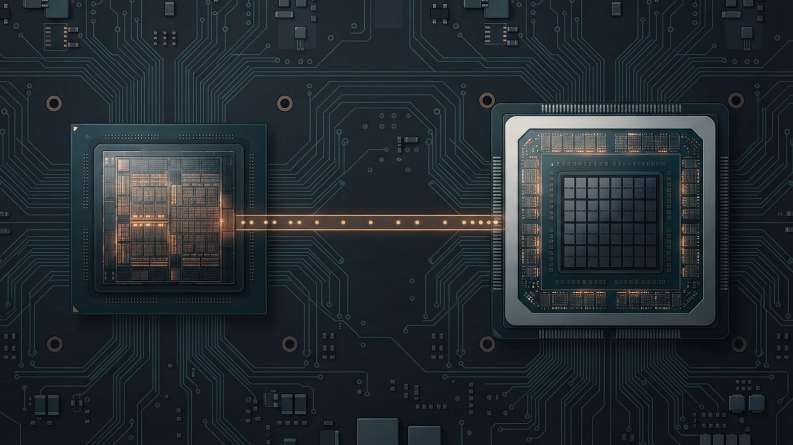
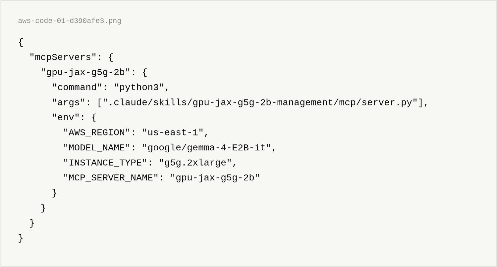
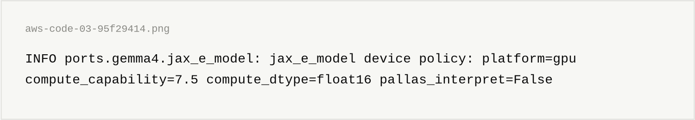
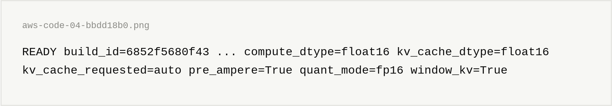
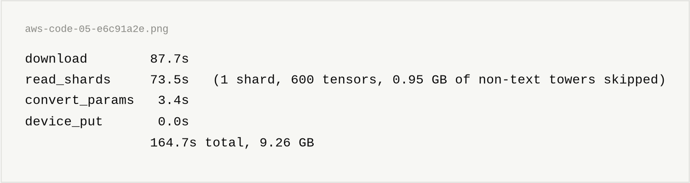
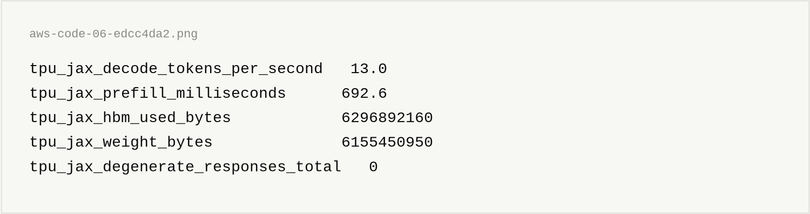
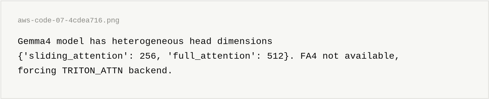
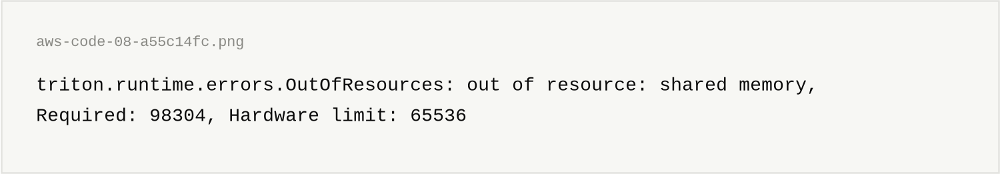
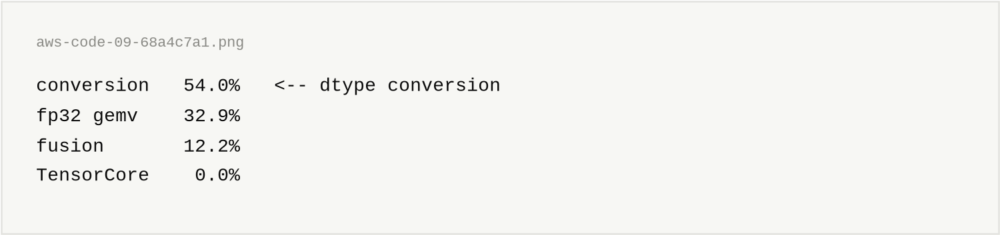
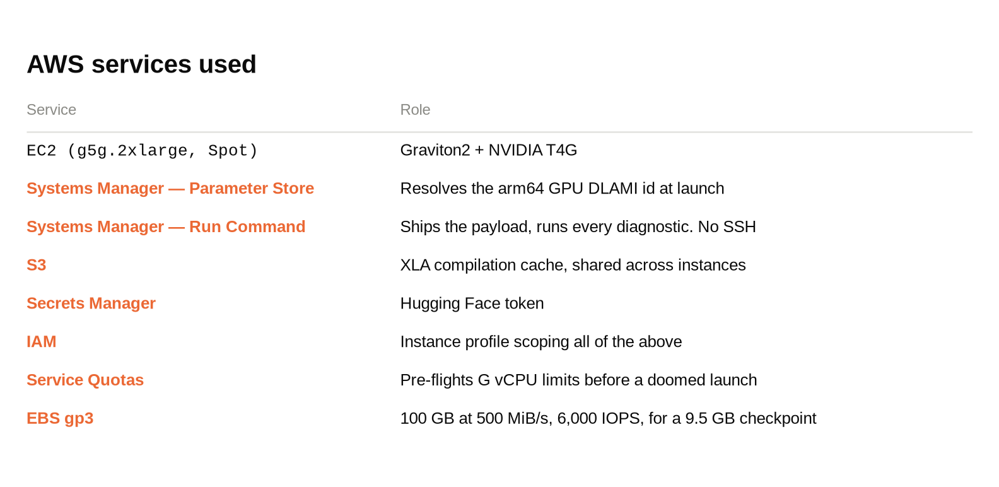

This article provides a step by step deployment guide for serving Google's Gemma 4 on an AWS EC2 G5g instance using pure JAX.
The code is here:
This project aims to serve a modern open model on the cheapest whole CUDA GPU AWS will rent you, and to measure honestly what that costs.
Probably! The T4G is a Turing chip from 2018. It has no bfloat16 and no fp8.
But it is cheap, it is available when nothing else is, and it is attached to a Graviton2 host — which makes G5g the rare hardware axis that almost nothing in the ML ecosystem targets: aarch64 and CUDA together.
So let's give pure JAX a shot on G5g!
G5g instances pair an AWS Graviton2 (64-bit Arm) processor with NVIDIA T4G Tensor Core GPUs. At g5g.xlarge they are the cheapest EC2 instance carrying a whole NVIDIA GPU, and the only Arm-based GPU family AWS offers.
Two GPU instances are cheaper per hour and neither can serve this model (us-east-1, Linux, on-demand, checked against the Pricing API on 2026-08-28):
g6f.large at $0.2020 is genuinely NVIDIA and genuinely CUDA — but it is one eighth of a GPU with 3 GB, and the weights alone are 6.155 GB. The first g6f that fits is g6f.4xlarge at $0.9500, which is 1.7x this rig's g5g.2xlarge.g4ad.xlarge at $0.3785 carries an AMD Radeon Pro V520 — no CUDA at any price.Among whole NVIDIA GPUs, G5g is the floor: g5g.xlarge at $0.4200, and the next one up is g4dn.xlarge at $0.5260.
More information is available here:
https://aws.amazon.com/ec2/instance-types/g5g/
The default in this rig is g5g.2xlarge — 1 GPU, 8 vCPU, 16 GiB RAM.
Note- the T4G reports 15,360 MiB of device memory, not the nominal 16 GB. Budget against the measured number.
Gemma is Google's family of open models built from the same research as Gemini. This rig serves google/gemma-4-E2B-it, the instruction-tuned reference release.
JAX is Google's array computing library — NumPy semantics, composable transformations, and compilation to XLA. On NVIDIA hardware, pip supplies the CUDA libraries, so there is nothing to build.
More information is available here:
https://github.com/jax-ml/jax
"Pure JAX" here is literal. The engine is this repo's own Gemma 4 port driven by a JAX generation loop behind an OpenAI-compatible FastAPI server, running under systemd.
You need four things before starting:
us-east-1pipThe instance profile needs AmazonSSMManagedInstanceCore plus read access to your Secrets Manager secret and your S3 cache bucket. There is no inbound SSH rule and no private key — all remote administration goes over SSM Run Command.
Clone the monorepo and install the control plane:
git clone https://github.com/xbill9/gemma4-dev
cd gemma4-dev/gpu-jax-g5g-2b
pip install -r requirements.txt
That installs boto3 and FastMCP only. Nothing here needs a GPU — the GPU is on the other end.
python3 -m unittest discover -s tests -v
105 tests, fully offline. Every cloud, subprocess, and network boundary is mocked. If these do not pass, do not launch an instance.
The whole rig is driven by an MCP server exposing a devops agent:
./project-setup.sh
This installs the bundled skill and registers .mcp.json:

Copy-paste form of the same file:
{"mcpServers":{"gpu-jax-g5g-2b":{"command":"python3","args":[".claude/skills/gpu-jax-g5g-2b-management/mcp/server.py"],"env":{"AWS_REGION":"us-east-1","MODEL_NAME":"google/gemma-4-E2B-it","INSTANCE_TYPE":"g5g.2xlarge","MCP_SERVER_NAME":"gpu-jax-g5g-2b"}}}}
Every tool is now available as mcp__gpu-jax-g5g-2b__<tool>.
save_hf_token(token="hf_...")
This writes to AWS Secrets Manager under vllm/hf-token. The instance fetches it at boot into a root-only EnvironmentFile.
Note- the token never goes in user data. Instance metadata is readable by anything running on the box.
check_g5g_quotas()
Reports your On-Demand and Spot G instance vCPU limits for the region. g5g.2xlarge is 8 vCPU. Check this before launching, not after the launch fails.
create_g5g_instance(subnet_id="subnet-...", security_group_id="sg-...", iam_instance_profile="...", spot=True)
The AMI is resolved at launch time from SSM Parameter Store:
/aws/service/deeplearning/ami/arm64/base-oss-nvidia-driver-gpu-ubuntu-26.04/latest/ami-id
Never hardcode an AMI id here. AWS also ships ARM64 DLAMIs built for Graviton CPU inference. They boot perfectly and simply have no GPU. The /latest/ parameter also moves — this rig has seen ami-0bff4343bfd56a20e become ami-025a6e5b3b786cf61 overnight as Ubuntu 26.04 became 26.04.1.
get_install_progress(instance_id="i-...")
Cloud-init installs jax[cuda13] on Python 3.14. The stages are timed:
![stage) jax-wheels 43s (total 84s) aws-code-02-867f3f71
117 seconds, and there is no compile step anywhere in it. That is the entire reason this rig exists — more on that below.
The cache-restore stage pulled 805 files / 12 MB in 6 seconds from S3, on a fresh instance, compiled by a box that had already been terminated. XLA's cold-compile penalty becomes a rounding error on Spot.
verify_gpu_arch(instance_id="i-...")
This measures whether JAX's CUDA kernels actually cover this GPU, rather than trusting that they do. You want to see SM 7.5 claimed and a real device, not a silent CPU fallback.
make skill
deploy_jax_server(instance_id="i-...")
Always make skill first. The deploy ships the skill snapshot, not your working tree. The deploy output prints the payload root and the build id so a stale deploy is visible in one line.
The first line the process emits is the device-policy banner:

Both halves matter. float16 is the device choosing Turing's only real 16-bit datapath — it is read from the live compute capability, not from a config file. And pallas_interpret=False is the difference between serving and silently running a simulator.
Then the whole resolved configuration lands on one greppable line:

Load is staged, so a hang is attributable:

Then confirm the served build matches what you shipped:
verify_model_health(instance_id="i-...")
query_model(instance_id="i-...", prompt="Explain Graviton in one sentence.")
The endpoint is OpenAI-compatible on :8000, so anything that speaks that API works:
get_endpoint(instance_id="i-...")
Note- warm up at the shape you measure. max_new_tokens is a static_argnames entry, so (bucket, max_tokens) is the compiled shape. The same request measured 18.77 s cold against 4.35 s warm.
get_metrics(instance_id="i-...")

Quote the gauge, not end-to-end. Decode is flat at 12.9 / 13.0 / 12.9 tok/s across 41 → 2,057 input tokens. End-to-end throughput does fall (12.43 → 8.22) — but that is prefill being linear in the padded bucket, not decode degrading. Two different claims.
Because I tried, on identical silicon, and it works — at 43 tok/s — but only after this:
cuda-toolkit from NVIDIA's sbsa repo, because the DLAMI ships a driver but no nvccThat last one is the interesting failure. Gemma 4 has heterogeneous attention head dimensions — sliding layers at 256, global layers at 512. Only two vLLM backends support that, and with FA4 unavailable it force-selects Triton:

Whose 512-wide tile then asks Turing for memory Turing does not have:

JAX sidesteps all four. pip supplies CUDA, so no build, no toolkit, no Rust. The plugin's precompiled cubins already cover sm_75. And attention is ordinary XLA rather than a hand-tiled Triton kernel, so there is no per-block shared-memory ceiling and no patch to carry.
The honest trade: 13.10 tok/s against 43, for a 117-second install with nothing to reapply. For a measurement rig I re-provision constantly on Spot, that was right. For a production endpoint it probably is not.
I profiled decode with xprof. The kernel table is the whole story:

Zero. 1,466 ms of kernels across 108 distinct kernels on a Tensor Core GPU, and not one Tensor Core fired. Over half of decode went to converting numbers between formats before the math could start.
The obvious hypothesis was bf16 weights being converted on a chip with no bf16. So this weekend I converted the checkpoint to float16 host-side and re-ran. Parameter dtypes now read {'float16': 541, 'uint8': 1, 'int8': 1} — and conversion is still 54.0%.
The obvious explanation is wrong and I do not yet know the real one. That is the next thing to profile. I would rather publish the open question than a tidy story.
What I can stand behind is that the measurement is real: the same profile on a different instance, a different AMI, and a restored cache landed at 1466.0 ms against 1467.1 ms. 1.1 ms apart on 1467.

Everything goes through boto3. The rig never shells out to the AWS CLI.
terminate_g5g_instance(instance_id="i-...")
Termination is cheap on this rig — there is no built image to lose with the root volume, only a pip install and a model cache, and the compilation cache is already in S3.
Check reachability on paper before spending a provisioning cycle. A nine-step analysis order — does the compute dtype match the chip, is there a fused kernel for that format on that chip — runs in an afternoon. A launch costs a day. It has killed two bad plans before either touched hardware.
A wrong dtype does not error. It emulates. bfloat16 on Turing does not fail loudly; it routes through fp32 and quietly eats your decode.
Refuse early, with the arithmetic attached. The fused W4A16 kernel wants 550 KiB–1.1 MiB per block and Turing gives you 64 KiB. The rig computes that at startup and refuses with the numbers in the message, rather than dying as a cryptic OutOfResources at the first token.
The scariest bugs return status: "success". A padding-eviction bug in the KV ring cache produced a token loop, not a crash. Nothing in the logs was red. It took a week.
The AWS G5g instance provides a genuinely cheap environment for serving open models, and pure JAX reaches a served token on it without a single line of compiled code. The throughput is not competitive with a patched vLLM - but the deployment is 117 seconds, reproducible to 1.1 ms, and has nothing to reapply.
{kind=link}